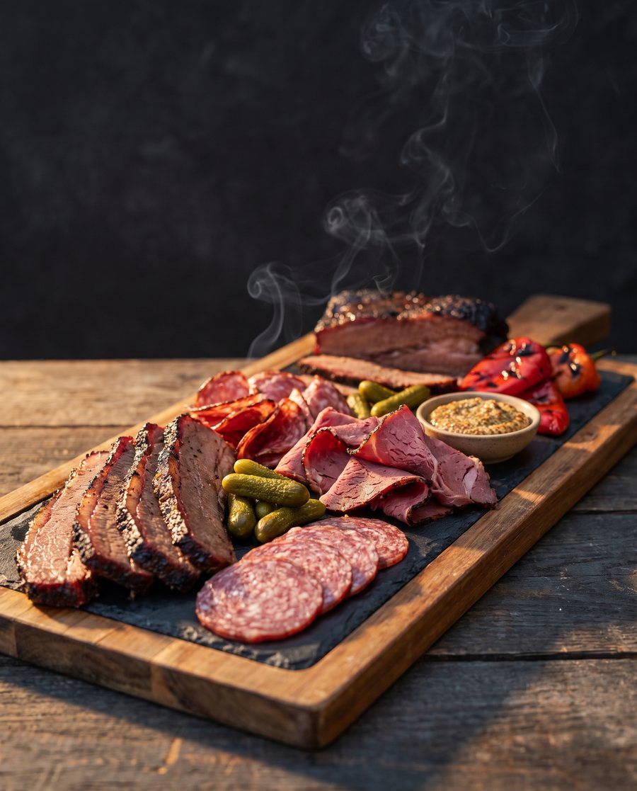
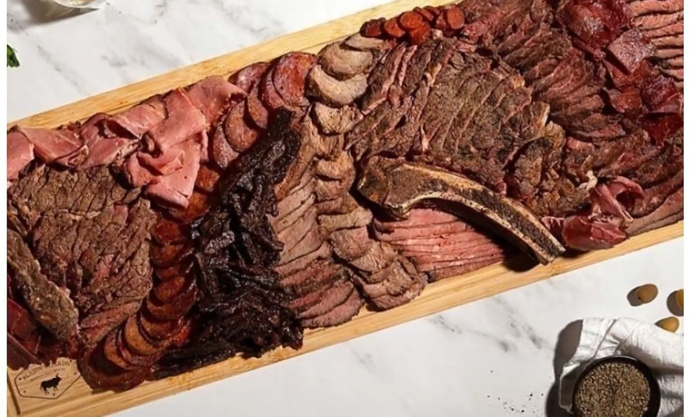
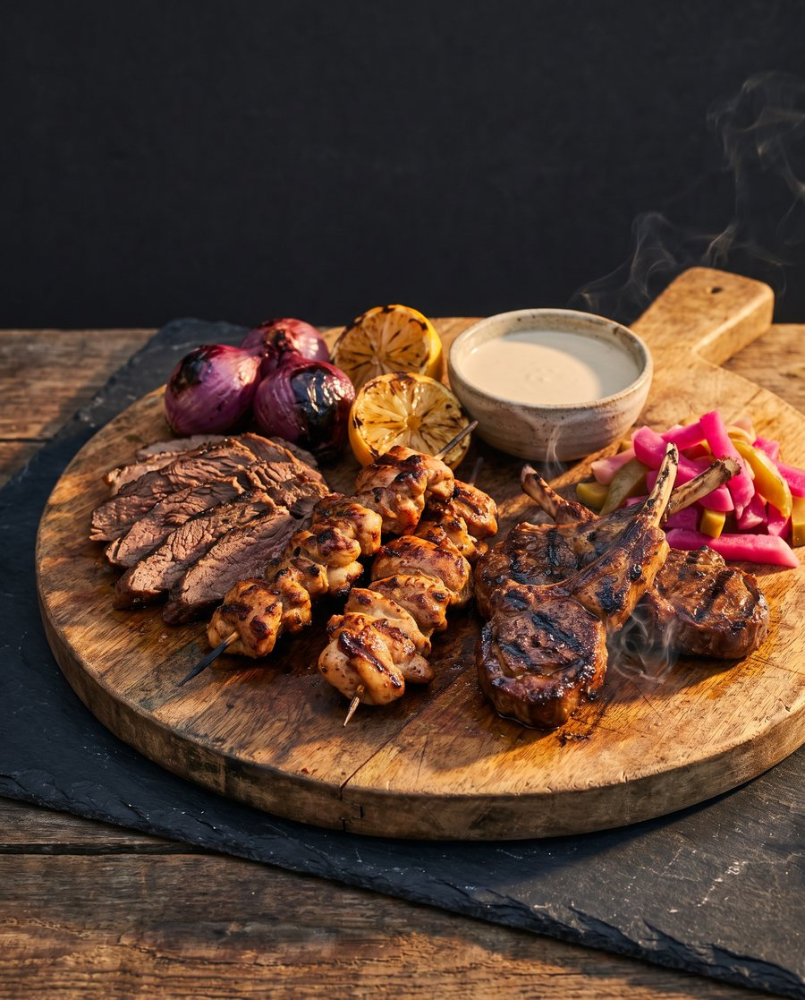
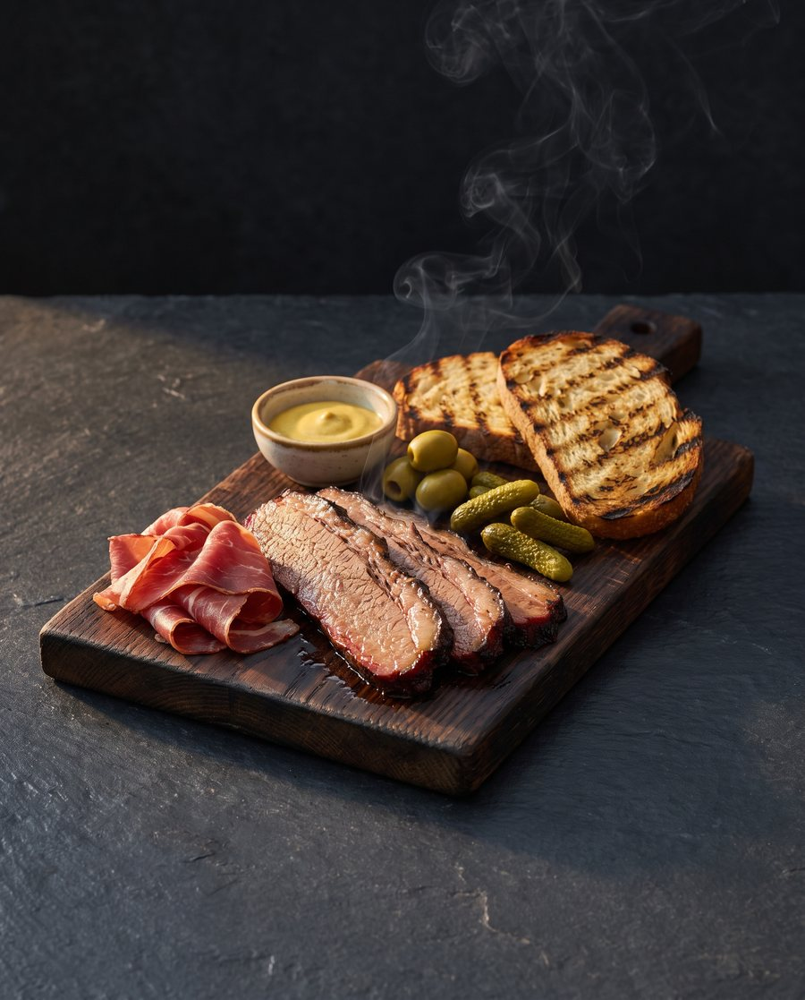
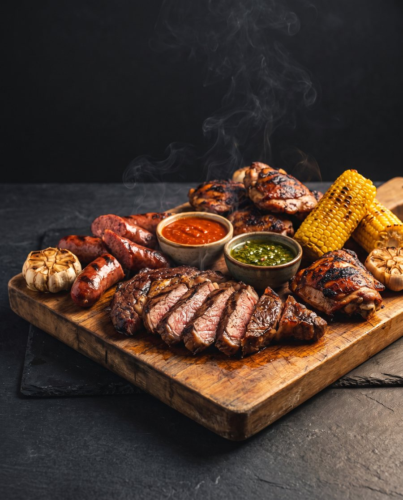
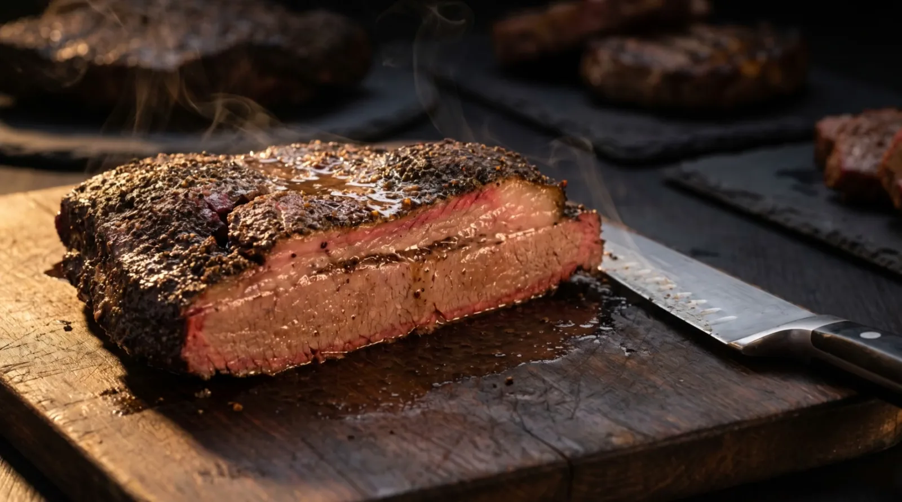
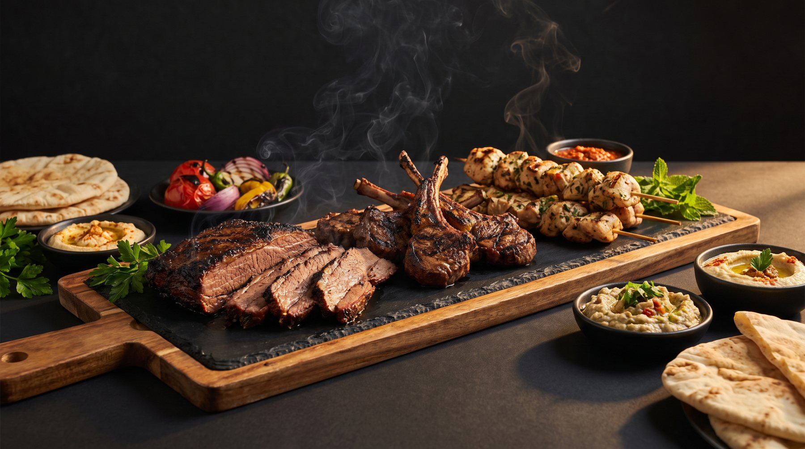

The long board
Smoked brisket, pastrami, beef salami, pickles, grainy mustard.
Message for a price
Blazin' Boards, Jerusalem.
Say who is coming and what they like. Message for a price.

Smoked brisket, pastrami, beef salami, pickles, grainy mustard.
Message for a price
Lamb chops, chicken skewers, charred onion, tahini, pickled turnip.
Message for a price
Brisket, cured beef, olives, pickles, mustard, grilled bread.
Message for a price
Sliced ribeye, beef sausages, chicken thighs, grilled corn, two sauces.
Message for a price
In their words.

Pay by card, Zelle or bank transfer. You talk to the business directly.
Blazin' Boards, Jerusalem, on MyIsraelRental. The moving board at the top is theirs. The other food photographs on this page are illustrations for this preview.